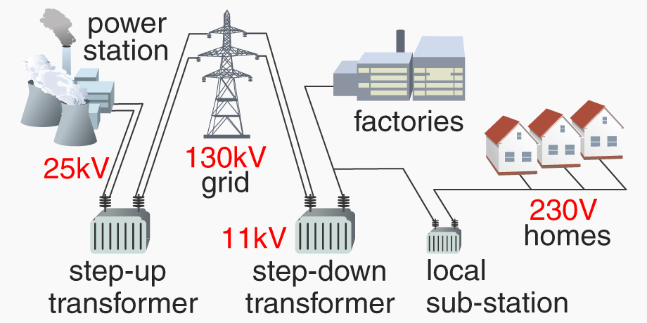
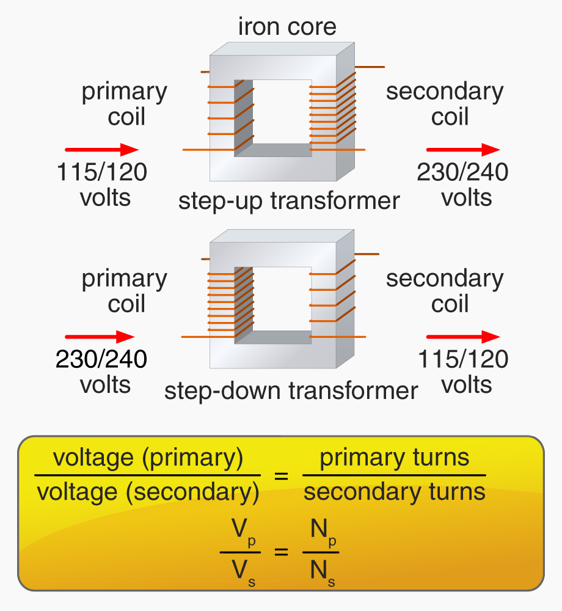
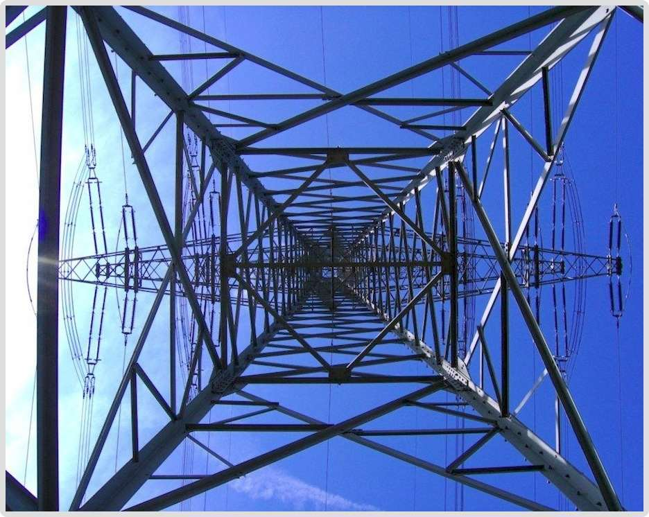
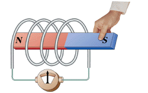
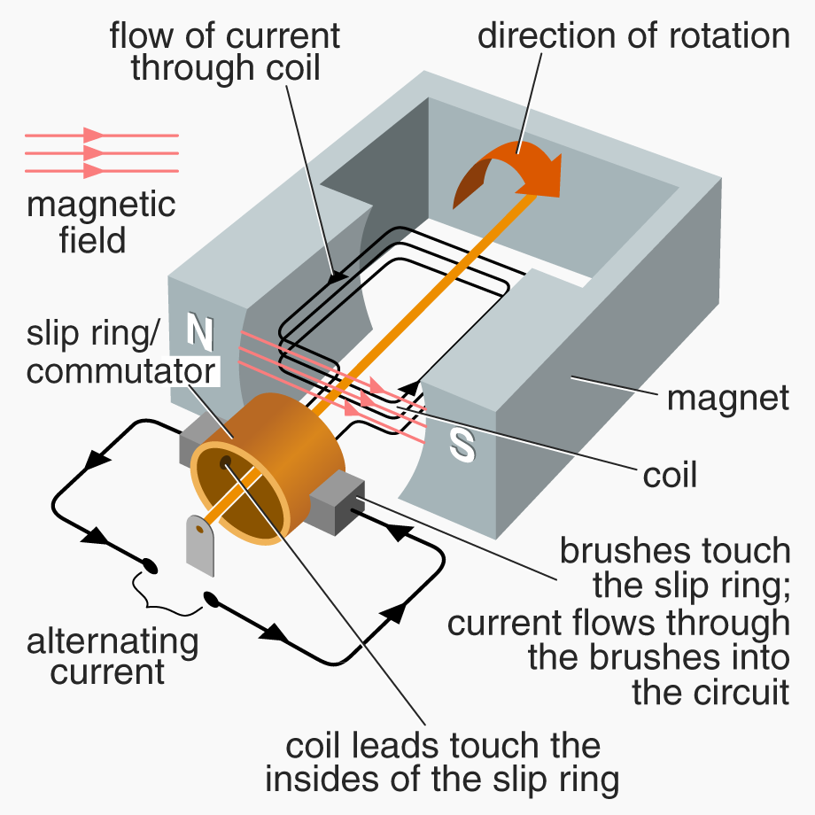

The electrical energy produced by renewable and non-renewable sources is easily distributed using the National Grid, a huge system of electric cables, pylons and transformers across the country.
The electric current flowing in a wire heats it. In the National Grid this is a waste of energy (the power the Grid transmits); it adds to the energy lost in cooling towers and gas stacks.
The National Grid uses ultra high voltages to reduce energy lost as heat when electricity travels many miles: less current passes through the Grid at this stage, but it can still provide the same power to the end user through clever use of transformers.
Power stations typically output 25 000V (25 kV); this is increased to 130 000V (130 kV) and even higher for transmission on the Grid, before being reduced to 230V in our homes.
Transformers change the voltages at each end of the Grid. A step-up transformer increases voltage and reduces current, yet a lower current transfers the same power overall: P = V x I. A step-down transformer decreases voltage, increases current.

The National Grid uses a series of different voltages to deliver 230V of electricity to our homes efficiently
The 230V sockets in our homes can potentially kill us, but are much safer than the 130 kV of the Grid. At this voltage more current now flows in our domestic appliances, heating them, but overall the voltage/current balance is ideal for home use.
How a transformer works (Edexcel): A transformer is two coils of wire wrapped around an iron core. Electricity goes into the primary core and comes out of the secondary core. The number of turns of the coil on each side determines whether the transformer is step up or step down:

The transformers above have 5/10 coils and 10/5 coils respectively. They ‘step up’ and ‘step down’ voltages in the same proportions
Domestic appliances often reduce the 230V at the mains to a voltage suitable for the appliance: many appliances do not need much power.
Example A laptop computer runs off the mains but only needs 11.5V supply. Its transformer has 5 turns in the secondary coil. How many turns are needed in the primary coil?
The transformer needs 100 primary turns.
The National Grid uses huge pylons, which can be hazardous because of their high voltages and are ugly to look at. But it would not be cost effective to put these Grid cables underground, or easy to repair them.

Electricity is a method of energy transfer. It is a secondary energy source – its energy comes from a different original source
Electromagnetic induction (Edexcel/OCR)
Moving a magnet into a coil of wire (or a coil of wire over a magnet) induces a voltage in the wire. This voltage will itself induce a direct current in the wire, if the wire is part of a complete circuit.
This electromagnetic induction can be used as a source of electricity in everyday life, e.g. in a wind-up torch or radio, and on a large scale in an electricity generating power station.

We move the coil over the magnet, or vice versa. Either way a current is induced, which changes direction (alternates) when the coil and magnet move in opposite directions
A continuous current can be generated by moving the coil (or the magnet) constantly, relative to each other. This is how some power stations generate electricity.

The diagram shows that each side of the coil crosses the magnetic field twice, once going up and once going down. This induces an alternating current (AC), as in the video above: a current that changes direction.
Electricity generators in power stations create huge induced voltages by wrapping many turns of coil over an iron core, and spinning it at high speed in a very strong magnetic field.